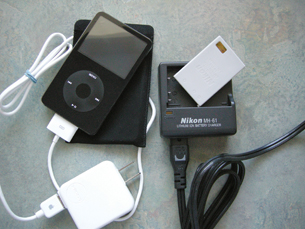

Module 4—Batteries and Balance
Lesson 3—Electrolytic Cells
 Get Focused
Get Focused

Many of the devices you use daily rely on rechargeable electric cells. In this module you have learned about the ability of electric cells to convert chemical energy into electrical energy. What changes occur when the cell from your MP3 player or digital camera is “recharged”?
In this lesson you will learn about rechargeable cells. You will learn how a recharging cell is an example of a different type of electrochemical cell, and you will learn why some cells can be recharged while others cannot be recharged.
Consider the following questions as you complete Lesson 3:
- What is an electrolytic cell?
- What chemical and energy conversions occur within an electrolytic cell?
 Module 4: Lesson 3 Assignment
Module 4: Lesson 3 Assignment
In the Lesson 3 Assignment you will design and test an electrolytic cell. Download a copy of the Module 4: Lesson 3 Assignment to your computer now. You will receive further instructions on how to complete this assignment later in the lesson.
You must decide what to do with the questions that are not marked by the teacher.
Remember that these questions provide you with the practice and feedback that you need to successfully complete this course. You should respond to all the questions and place those answers in your course folder.